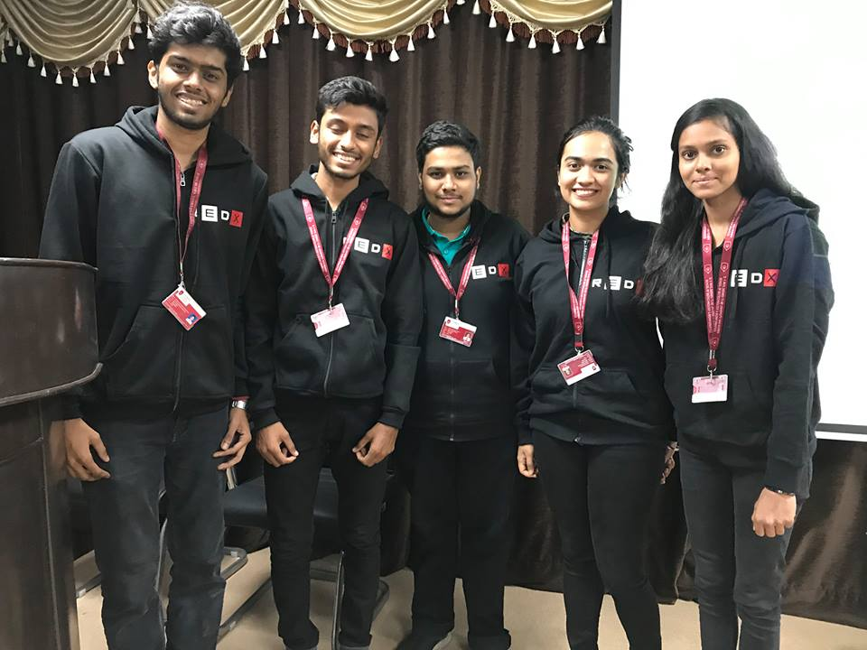
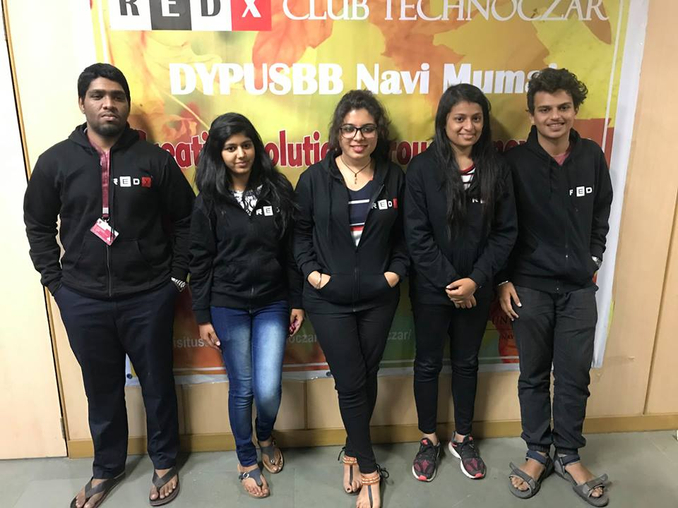

Lenessa Colacco and her Team members

Selva Kumar Konar, Venessa Colaco, Mansi Mandhan, Keerthi Renganathan
Working on :
Combating the issue of waste segregation using artificial intelligence.
Manoj Singh Chauhan and his Team members

Fazlur Rehman Mohd Naseem, Janani Saptharishi, Himali Laxman Lambture, Arijit Ghosh
Working on :
The increase of death casualties in road accident due to delayed treatment and not able to identify the victim.
Shubh Hemnani AND HIS TEAM MEMBERS

Prayukta Padelkar, Rhea Shetkar, Millin Behera, Namrata Bonde
Working on :
Artificial Intelligence for Floral waste management and its utilization.
Vinnie Thanwani and her TEAM MEMBERS
